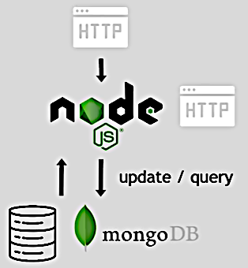
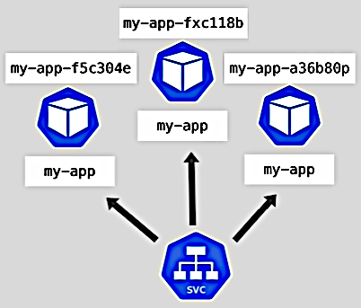
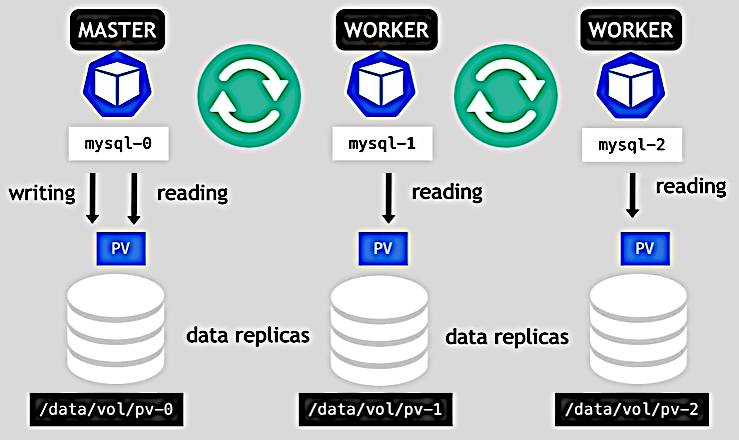
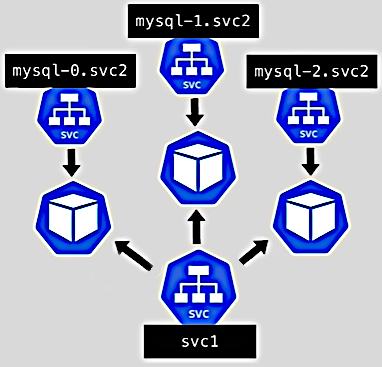

K8s StatefulSets

StatefulSet is used specifically for stateful applications (like databases and other applications that store data to keep track of its state).
Stateless applications don't keep record of state and consider each request as completely new. They may connect stateful application to forward their requests.
Stateless applications are deployed using Deployment components.
Stateful applications are deployed using StatefulSet components.
The both components manage Pods based on container specification. The storage is configured the same for both of them.

With a stateless application:
Replicating stateful application is more difficult. It has different requirements. The replica Pods:
Here's how stateful application replication is done:

Master Pod can read and write while worker (slave) Pods can only read data. And after the master changes data the workers don't read their storage before synchronization is done. If a new worker Pod is added it clones its state from the previous (not any) Pod and then becomes available. With this schema the data will survive even if all Pods die.
To make it work a Persistence Volume contains information about the Pod identity state (whether it's a master or a slave). And it's important to use remote storage because the Pod may be restored on the other Node and the storage must be accessible to it anyway.
StatefulSet Pods have fixed ordered names in format ${StatefulSet name}-${ordinal}. The first
Pod is the master and the rest are the slaves in their start order. The next Pod is created if
the previous one is up and running. The Pod deletion is done in the reverse order and also
one by one.

A StatefulSet Pod has two endpoints. The first is the same as for a Deployment. The second is
DNS name in format ${pod name}.${governing service domain}.
So when a Pod restarts the IP address changes but the endpoint stays the same. So Pod has sticky identity.
Note. Replicating stateful apps is a complex task. K8s helps but there are a lot of things to be done by the maintainer:
- Configuring the cloning and data synchronization.
- Making remote storage available.
- Managing back up.
That's because stateful apps are not perfect for containerized environment.